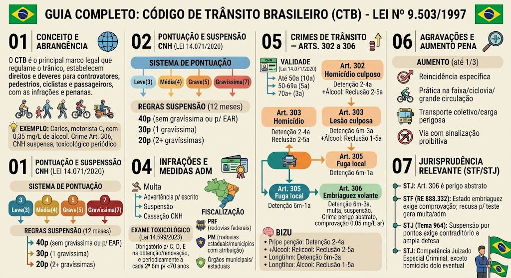

Material de estudo: Lei nº 9.503/1997 — Código de Trânsito Brasileiro (CTB)
Material complementar · Ver fonte no GitHub
Conceito e Abrangência
O que é o CTB
O Código de Trânsito Brasileiro (Lei nº 9.503/1997) é o principal diploma normativo que regula o trânsito no Brasil. Define direitos e deveres de todos os usuários (motoristas, pedestres, ciclistas, passageiros) e estabelece infrações, penalidades, medidas administrativas e crimes de trânsito.
Situação prática
Carlos, motorista profissional (categoria C), foi flagrado com 0,35 mg/L de álcool no ar expelido. Ele responderá pelo crime do art. 306 (direção sob influência de álcool) e terá a CNH suspensa. Além disso, como é categoria C, deverá fazer exame toxicológico periódico a cada 2 anos e 6 meses.
Pontuação e Suspensão da CNH (Lei nº 14.071/2020)
Sistema de pontuação
As infrações são classificadas em quatro graus, com pontuação na CNH:
- Leve: 3 pontos
- Média: 4 pontos
- Grave: 5 pontos
- Gravíssima: 7 pontos
Regras para suspensão por pontuação (em 12 meses)
A suspensão do direito de dirigir ocorre quando o motorista atinge os seguintes limites, no período de 12 meses:
- 40 pontos: se não cometer nenhuma infração gravíssima (ou para motoristas com EAR - Exercício de Atividade Remunerada, independentemente da gravidade).
- 30 pontos: se cometer 1 infração gravíssima.
- 20 pontos: se cometer 2 ou mais infrações gravíssimas.
Pegadinha
A contagem é sempre em 12 meses, independentemente de quando a infração foi cometida. O motorista com EAR tem limite único de 40 pontos, mesmo que cometa gravíssimas.
Validade da CNH e Exame Toxicológico
Validade da CNH (Lei nº 14.071/2020)
A validade da Carteira Nacional de Habilitação (CNH) passou a ser:
- Até 50 anos de idade: 10 anos.
- De 50 a 69 anos: 5 anos.
- 70 anos ou mais: 3 anos.
- O médico perito pode reduzir esses prazos se julgar necessário.
Exame toxicológico (Lei nº 14.599/2023)
O exame toxicológico é obrigatório para condutores das categorias C, D e E, nos seguintes momentos:
- Na obtenção ou renovação da CNH.
- Periodicamente, a cada 2 anos e 6 meses, para motoristas com menos de 70 anos.
- A recusa ou resultado positivo (para substâncias proibidas) impede a renovação ou pode acarretar a suspensão.
Infrações e Medidas Administrativas
Penalidades administrativas
O CTB prevê as seguintes penalidades, além da pontuação:
- Multa (valor variável conforme a gravidade da infração).
- Advertência por escrito (para infrações leves, a critério da autoridade).
- Suspensão do direito de dirigir (por pontuação ou por decisão judicial).
- Cassação da CNH (aplicada em casos de crimes de trânsito, reincidência ou quando o motorista for condenado à suspensão por mais de 2 vezes no prazo de 5 anos).
- Recolhimento do veículo (em casos de irregularidades graves, como falta de licenciamento).
- Recolhimento da CNH (em flagrante de crime de trânsito, por exemplo).
Competência para fiscalização
A fiscalização de trânsito é exercida por:
- Polícia Rodoviária Federal (PRF): nas rodovias federais.
- Polícia Militar (PM): nos municípios e rodovias estaduais, com competência para polícia ostensiva de trânsito, respeitando as atribuições dos órgãos de trânsito estaduais e municipais (art. 24, §2º, do CTB).
- Órgãos de trânsito municipais e estaduais: responsáveis pelo licenciamento, vistorias e aplicação de multas.
Imobilização de Veículos – Parada x Estacionamento
Parada e Estacionamento – PEGADINHA FREQUENTE!
Parada: imobilização do veículo pelo tempo estritamente necessário apenas para embarque ou desembarque de passageiros.
Estacionamento: imobilização por tempo superior ao necessário para embarque/desembarque – qualquer tempo a mais para carga/descarga ou espera já se caracteriza como estacionamento.
📌 Dica: se o motorista desliga o veículo ou sai do carro, presume-se estacionamento.
⚠️ Pegadinha: A banca pode perguntar se esperar alguns minutos com o veículo parado é estacionamento – se ultrapassar o tempo para embarque/desembarque, é estacionamento.
Manobras e Movimentação
Ultrapassagem x Transposição de Faixa
Ultrapassagem: mover-se à frente de outro veículo no mesmo sentido, saindo de sua faixa e retornando à faixa de origem após a manobra.
Transposição de Faixa: apenas a mudança de uma faixa para outra na mesma direção (sem a obrigação de retornar à faixa original).
🧠 Mnemônico: "Ultrapassagem = sai e volta / Transposição = só muda de faixa".
Classificação de Veículos por Tipo e Posição
Tipos de veículos
Caminhonete: veículo de carga com Peso Bruto Total (PBT) de até 3.500 kg.
Camioneta: veículo misto (transporte de passageiros e carga no mesmo compartimento).
Motocicleta: veículo de 2 rodas dirigido na posição montada (pernas abertas no tanque).
Motoneta: veículo de 2 rodas dirigido na posição sentada (pernas juntas/apoiadas no piso).
Ciclomotor: veículo de 2 ou 3 rodas de até 50 cm³ (ou 4 kW se elétrico) e velocidade máxima de 50 km/h.
📌 Dica: a diferença entre motocicleta e motoneta é a posição do condutor – montado vs sentado.
Conceitos de Peso e Carga
Tara, PBT e PBTC
Tara: o peso "vazio" do veículo (peso próprio + combustível + fluidos + estepe + ferramentas), sem motorista, passageiros ou carga.
Peso Bruto Total (PBT): o peso máximo transmitido ao solo (Tara + Carga/Lotação).
PBTC (Combinado): a soma do PBT do veículo trator + o PBT do reboque/semirreboque.
🧠 Mnemônico: "Tara = vazio / PBT = cheio / PBTC = combinado."
Vias e Espaços Públicos
Rodovia, Estrada, Calçada, Passeio e Acostamento
Rodovia vs. Estrada: ambas são vias rurais, mas a Rodovia é pavimentada e a Estrada não é pavimentada.
Calçada vs. Passeio: a Calçada inclui o espaço para pedestres + mobiliário urbano (postes, lixeiras) + sinalização. O Passeio é apenas a parte da calçada (ou pista) destinada à circulação exclusiva de pedestres/ciclistas.
Acostamento: parte da via destinada a emergências (parada/estacionamento) ou circulação de pedestres/bicicletas quando não houver local próprio.
📌 Dica de Ouro: A condução de bicicleta a pé equipara o cidadão ao pedestre em direitos e deveres.
Categorias das Vias Urbanas e Velocidades — TACL
Vias Urbanas (TACL) – Velocidades máximas
A classificação das vias urbanas segue o mnemônico TACL:
- Trânsito Rápido: acessos especiais, trânsito livre, sem cruzamentos em nível e sem travessia de pedestres em nível – 80 km/h.
- Arterial: liga regiões da cidade, possui cruzamentos em nível (geralmente com semáforo) – 60 km/h.
- Coletora: coleta e distribui o trânsito das vias arteriais/trânsito rápido – 40 km/h.
- Local: destinada apenas ao acesso local ou a áreas residenciais restritas – 30 km/h.
🧠 Mnemônico: "TACL – 80, 60, 40, 30".
Resumo das velocidades urbanas
| Tipo de Via | Velocidade Máxima |
|---|---|
| Trânsito Rápido | 80 km/h |
| Arterial | 60 km/h |
| Coletora | 40 km/h |
| Local | 30 km/h |
Velocidades em Vias Rurais
Rodovias – Pista Simples
Pista Simples:
- 100 km/h – automóveis, caminhonete, camioneta e motocicleta.
- 90 km/h – demais veículos (caminhões, ônibus, etc.).
Rodovias – Pista Dupla
Pista Dupla:
- 110 km/h – automóveis, caminhonete, camioneta e motocicleta.
- 90 km/h – demais veículos (caminhões, ônibus, etc.).
Estradas (vias rurais não pavimentadas)
Estradas: via rural não pavimentada – 60 km/h para todos os veículos.
Resumo das velocidades rurais
| Tipo de Via | Veículos | Velocidade Máxima |
|---|---|---|
| Rodovia – Pista Simples | Automóveis, caminhonete, camioneta, motocicleta | 100 km/h |
| Rodovia – Pista Simples | Demais veículos | 90 km/h |
| Rodovia – Pista Dupla | Automóveis, caminhonete, camioneta, motocicleta | 110 km/h |
| Rodovia – Pista Dupla | Demais veículos | 90 km/h |
| Estrada (não pavimentada) | Todos os veículos | 60 km/h |
Infrações – Pontuação por Grau
Pontos por infração
As infrações são classificadas em quatro graus:
- Gravíssima (GG): 7 pontos
- Grave (G): 5 pontos
- Média (M): 4 pontos
- Leve (L): 3 pontos
Hierarquia das Normas de Trânsito – Pirâmide
Pirâmide de Jil/Sigov (Hierarquia das normas)
A ordem de obediência e hierarquia das normas de trânsito, de cima para baixo, é:
1. Ordem do Agente – a autoridade de trânsito tem precedência sobre qualquer sinalização.
2. Semaforização – os sinais luminosos prevalecem sobre a sinalização vertical e horizontal.
3. Sinalização – as placas e marcas viárias.
4. Normas gerais – as regras do CTB e demais legislações.
🧠 Mnemônico: "Ordem, Semáforo, Sinal, Norma" (OSSN).
⚠️ Pegadinha: A ordem do agente prevalece sobre qualquer sinalização – se o agente mandar parar, o motorista deve obedecer, mesmo que o semáforo esteja verde.
Tipos de Placas de Sinalização
Formatos das placas
Os formatos das placas indicam sua função:
- Círculo – placas de regulamentação (obrigações ou proibições).
- Quadrado – placas de indicação (informativas ou de serviços).
- Losango – placas de advertência (perigos ou riscos).
🧠 Mnemônico: "Círculo = Regra / Quadrado = Informação / Losango = Cuidado".
Alcoolismo e Direção – Níveis de Concentração
Níveis de álcool no ar expelido
Os níveis de concentração de álcool por litro de ar alveolar e suas consequências são:
- 0,00 – 0,04 mg/L: Medida Administrativa (ME) – recolhimento da CNH e multa.
- 0,05 – 0,33 mg/L: Medida Administrativa (MA) – infração gravíssima (7 pontos), multa de R$ 2.934,70, suspensão do direito de dirigir e recolhimento do veículo.
- ≥ 0,34 mg/L: Medida Administrativa (MA) + Crime – além das penalidades administrativas, configura crime do art. 306 do CTB (embriaguez ao volante), com detenção de 6 meses a 3 anos, multa e suspensão da CNH.
📌 Dica: a recusa ao teste de bafômetro também gera infração gravíssima (7 pontos) e multa, mas não configura crime (STF).
Órgãos de Trânsito – Competências
CONTRAN, SENTRAN e DETRAN
CONTRAN (Conselho Nacional de Trânsito): órgão máximo normativo federal – estabelece regras gerais, resoluções e regulamentações do CTB.
SENTRAN (Secretaria Nacional de Trânsito): órgão executivo federal, vinculado ao Ministério da Infraestrutura – coordena e executa a política nacional de trânsito.
DETRAN (Departamento Estadual de Trânsito): órgão estadual responsável pela execução das políticas de trânsito nos Estados, como habilitação, licenciamento, vistorias e aplicação de multas.
📌 Dica: CONTRAN é normativo; SENTRAN é executivo federal; DETRAN é executivo estadual.
Crimes de Trânsito — Arts. 302 a 306 do CTB
Homicídio culposo na direção (Art. 302)
Art. 302: praticar homicídio culposo na direção de veículo automotor — detenção de 2 a 4 anos, suspensão ou proibição da CNH.
- §3º (aumento): se o agente estiver sob influência de álcool ou substância psicoativa, a pena é de reclusão de 2 a 5 anos (e suspensão).
Lesão corporal culposa (Art. 303)
Art. 303: praticar lesão corporal culposa na direção de veículo — detenção de 6 meses a 3 anos, suspensão.
- §2º (aumento): se o agente estiver sob influência de álcool ou substância, a pena é de reclusão de 1 a 5 anos (e suspensão).
Fuga do local do acidente (Art. 305)
Art. 305: deixar de prestar socorro à vítima ou fugir do local — detenção de 6 meses a 1 ano (ou multa), se o fato não constituir crime mais grave. A fuga também é agravante para os crimes dos arts. 302 e 303.
Embriaguez ao volante (Art. 306)
Art. 306: conduzir veículo com capacidade psicomotora alterada em razão de álcool ou substância psicoativa — detenção de 6 meses a 3 anos, multa e suspensão ou proibição de obter CNH (crime de perigo abstrato). Aplica-se a condutores com concentração de álcool igual ou superior a 0,05 mg/L de ar alveolar ou qualquer quantidade de substância psicoativa.
Memorização das penas
📌 Homicídio culposo simples: detenção 2 a 4 anos.
📌 Homicídio culposo + embriaguez: reclusão 2 a 5 anos.
📌 Lesão culposa simples: detenção 6 meses a 3 anos.
📌 Lesão culposa + embriaguez: reclusão 1 a 5 anos.
📌 Embriaguez (art. 306): detenção 6 meses a 3 anos.
Agravações e Causas de Aumento
Causas de aumento de pena
As penas dos crimes de trânsito podem ser aumentadas (até 1/3) se:
- Reincidência específica em crime de trânsito.
- Prática do crime em faixa de pedestre, ciclovia ou em local de grande circulação.
- Utilização de veículo de transporte coletivo ou de carga perigosa.
- Prática do crime na faixa de domínio de rodovia ou em via com sinalização proibitiva.
Jurisprudência Relevante (STF/STJ)
Entendimentos consolidados
Os tribunais superiores pacificaram os seguintes entendimentos:
- STJ: O crime do art. 306 (embriaguez ao volante) é de perigo abstrato, bastando a comprovação da alteração da capacidade psicomotora por exame clínico ou etílico.
- STF (RE 888.332): O estado de embriaguez ao volante exige comprovação por exame de sangue ou equivalente; a recusa ao teste não é crime, mas gera multa e penalidades administrativas.
- STJ (Tema 964): A aplicação da suspensão da CNH por acúmulo de pontos exige processo administrativo com contraditório e ampla defesa.
- STJ: A competência para julgar crimes de trânsito é do Juizado Especial Criminal, salvo nos casos de homicídio culposo (que podem ser julgados pelo Tribunal do Júri se houver dolo eventual).
Mapa-mental
